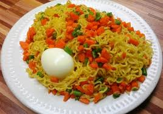

Fried potatoes is an edible tuber native to south america, a staple food of ireland. it is a carbohydrate bearing edible starchy tubers widely cultivated as a garden vegetable, vines are poisonous.
| Meal | Ingredients | Steps |
|---|---|---|
| Fried Potatoes | potatoes salt Vegetable oil for frying |
peel potatoes wash potatoes Add salt put potatoes into hot oil wait for a few minutes and sieve |

Indomie recipes are just too many in Nigeria, kids love them as well as adults.
They have been able to capture the hearts of most Nigerians with a series of good products and of course their often captivating commercials.
| Meal | Ingredients | Steps |
|---|---|---|
| Indomie Noodles | sliced Onions, Fresh pepper, 50ml vegetable oil |
insert the indomie in a bowl and pour boiled water to it, allow for about five minutes for the noodles to get soft. Drain water from the noodles after 4 minutes, add the follow-come spices while still in the bowl, at this point, the noodles will be both soft and hot. The frying pan contains the fried tomatoes onions and peppers, cook and stir for about five minutes and you are done. |
Yam porridge is very popular in Nigeria and other parts of Africa. Yam is a blank canvas, it requires few ingredients to make it and it is very easy to cook too.
| Meal | Ingredients | Steps |
|---|---|---|
| Yam | Tomato paste Salt, Water maggi vegetables vegetable oil |
peel yam and cut into pieces cut vegetables and fry in oil with paste Add enough water to cover the yam and add and maggi and salt Place on medium heat and cook till yam is soft. add more vegetables serve immediately |